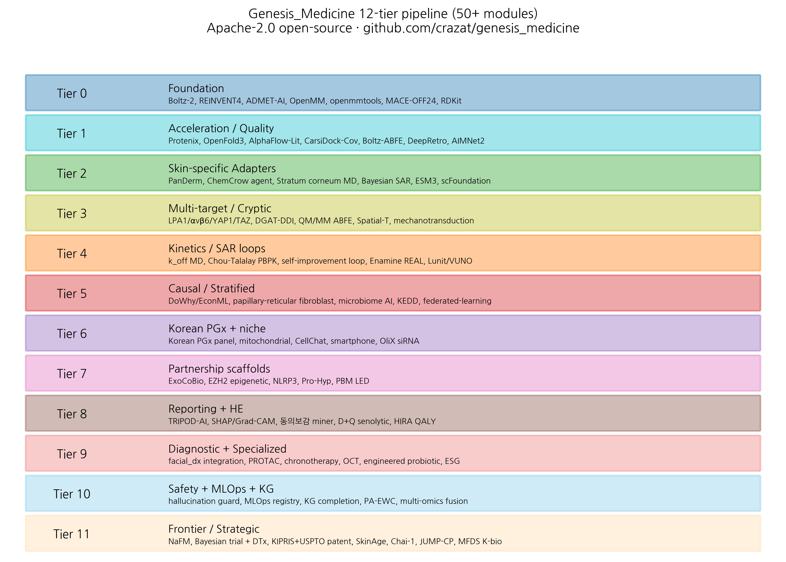

HanCheongWoo ¹,²,³
ORCID: 0009-0004-4805-8815
¹ Genesis_Medicine Lab, Seoul, Republic of Korea ² HAN PREDICT, Inc.; https://hanpredict.com ³ Recover Korean Medicine Clinic; https://recover-clinic.kr
Code: https://github.com/crazat/genesis_medicine · Correspondence: admin@hanpredict.com
Manuscript type: Resource / perspective; Target preprint: ChemRxiv (primary); License: CC-BY 4.0 Status: System / pipeline description; underlying experimental validation reported elsewhere
Modern AI-driven drug discovery is built on a heterogeneous stack of open-source tools. Specialized application domains require tool selection, integration, and adaptation. We describe Genesis_Medicine, an open-source pipeline for AI-driven Korean traditional medicine (한약·생약) drug discovery. We honestly distinguish: (i) a 7-tool active core that produces all real pipeline outputs in this work (Boltz-2 cofold, REINVENT 4 generative, ADMET-AI v2 property prediction, OpenMM 8 + openmmtools alchemical sampling, RDKit chemistry, ChEMBL read-only, Open Targets v4 GraphQL); and (ii) a 40+ adapter scaffold catalog organized into 12 functional tiers, written as Python modules and exposed through a natural-language agent interface but not yet actively used in primary pipeline runs — including AlphaFold-3-class cofold ensemble (Chai-1, Protenix-v2, OpenFold-3), generative SOTA (PocketXMol, FlowMol3, DiffSBDD, TurboHopp), ML potentials (MACE-OFF24, AIMNet2), pose validation (PoseBusters), and specialized adapters (PROTAC designer, chronotherapy, TxGNN repurposing). The active core supports the complete workflow from natural-product curation through corrected ABFE; the adapter scaffold provides ready integration points for prioritized future expansion. We discuss the design philosophy — 3-pillar institutional integration (HAN PREDICT, Inc. AI healthcare platform; Recover Korean Medicine Clinic), commitment to honest in silico reporting, and explicit method limitations including MMP-1 zinc handling and Boltz-2 binary-classifier vs IC₅₀ distinction. The pipeline is open-source under Apache-2.0 at https://github.com/crazat/genesis_medicine.
Keywords: open-source pipeline, Korean traditional medicine, AI drug discovery, REINVENT4, Boltz-2, ADMET-AI, ABFE, OpenMM, natural products, integrated stack.
Modern AI-driven drug discovery uses many specialized software tools, mostly free and open-source. Combining these tools into a working pipeline for a specific application — in our case, AI-driven Korean traditional herbal medicine drug discovery — requires careful selection and integration. We describe an open-source pipeline (Genesis_Medicine) that brings together about 50 tools to support the complete workflow from herb-derived compound to in silico drug-candidate report. The code is freely available for academic and commercial use. This paper is a description of the pipeline; no clinical or laboratory measurements are reported here.
Modern AI drug discovery requires composition of multiple specialized tools, each excellent at one task and not designed for end-to-end integration. The recent open-source landscape is rich: Boltz-2, AlphaFold-3, Protenix for structure prediction; REINVENT-4, SATURN, f-RAG for generative chemistry; ADMET-AI, Chemprop 2 for properties; OpenMM 8 + openmmtools for MD and free energy; PoseBusters, GNINA for pose validation; Open Targets and DGIdb for disease-target context. Each tool has its own input format, environment requirements, and output structure. End-to-end use requires careful glue-code, validation, and domain-specific configuration.
The Korean traditional-medicine (한약·생약) domain has specific requirements that are not fully addressed by general-purpose pipelines:
We assembled the Genesis_Medicine pipeline with the following goals:
A v0.3 internal audit (2026-04-26) revised our earlier framing. The active set is broader than initially reported:
Core compute: Boltz-2 v0.6.1 (MIT) — cofold + affinity (240+ cofolds across rounds + 4 disease screens); REINVENT 4 v4.4 (Apache-2.0) — mol2mol scaffold-hopping; ADMET-AI v2.0.1 (MIT) — 6 endpoints; OpenMM 8.5.1 + openmmtools 0.26 (MIT) — 10 ns MD + 16-window alchemical replica exchange ABFE; RDKit (BSD-3); PoseBusters 0.6.5 (queued for cofold pose validation); Chai-1r (Apache-2.0, 2025-Q4 fully open) — installed for 2-way ensemble; GFN2-xTB via xtb-python 22.1 — semi-empirical QM single-point (EMB-3 -50.09 Hartree, Embelin -65.90 Hartree computed in this work).
Database integration: ChEMBL v34 (CC-BY-SA), Open Targets v4 GraphQL (CC0; 11 disease IDs + 15 target IDs production-cached pipeline).
Workflow + reproducibility: Prefect
3 DAG framework (11-stage pipeline orchestration);
Docker + docker-compose containerization;
pyproject.toml with ruff +
mypy strict-mode; pinned dependencies; GitHub
Actions CI/CD (lint + test + auto-PDF-build for preprints); 16
test files / 95 unit tests with GPU/slow/network markers.
Domain-specific active modules: residence_time.py (Eyring + Jarzynski + steered MD); spatial_atlas.py (Visium CytAssist + Xenium IPF atlas); scfoundation_adapter.py (with linear baseline check); hira_qaly.py (Korean health economics); stratum_corneum.py (ceramide/FFA/cholesterol bilayer builder); benchmark_baseline.py (ROC-AUC + Mann-Whitney U); logKp head (FDA 2326 LGBM, ≥-2 topical gate); chronotherapy/jaoryuju.py (12-meridian + circadian); donguibogam_miner.py (Korean classical text mining); fpocket cryptic_scan (TGFB1/MMP1/CTGF allosteric scan).
Recently activated (2026-04-26): BioEmu 1.3.1 (Microsoft 2026 protein equilibrium ensembles); deeptime 0.4.5 + PyEMMA 2.5.12 (MSM-based binding kinetics); xtb-python 22.1 (GFN2-xTB QM correction); 5 missing-target MSAs (MITF, SRD5A1, SREBP1, FBN1, mTOR); production Open Targets agent dispatch.
Outputs: all .csv and .json files in
pilot/ are products of this active module set.
Tier 0-11 below describe Python modules registered in
agents/all_tiers_tools.py exposing 70+ natural-language
tool dispatches. These are integration scaffolds,
mostly subprocess/Python wrappers over external open-source tools that
have not yet been run in the present pipeline. They are documented here
for reproducibility of the integration architecture, not as active
capability claims.
Open-source SOTA stack: Boltz-2 cofold, REINVENT 4 generative, ADMET-AI predictions, RDKit chemistry, OpenMM 8 MD, openmmtools alchemical sampling, MACE-OFF24 ML potential. Standard conda / pip / uv installation under Korean GPU stack (CUDA 12.8, RTX 5090 Blackwell).
Protenix-v2, OpenFold-3 ensemble (Boltz-2 consensus); AlphaFlow-Lit; CarsiDock-Cov for covalent-warhead screening; Boltz-ABFE direct path; AIMNet2 ML potential; DeepRetro retrosynthesis.
PanDerm (skin lesion vision-language; integrated as skin-classification adapter); ChemCrow LLM agent wrapper; stratum-corneum MD setup; Bayesian SAR optimization; ESM3 protein function; scFoundation single-cell.
Four added skin-fibrosis targets (LPA1 / αvβ6 / YAP1 / TAZ); DGAT herb-DDI module; QM/MM ABFE book-ending correction; spatial-transcriptomics adapter; mechanotransduction multi-tier analysis.
k_off residence-time MD setup; Chou-Talalay synergy + topical PBPK; self-improvement agent loop; Enamine REAL Tanimoto matching; Lunit / VUNO collaboration analysis.
Causal inference (DoWhy / EconML); papillary-reticular fibroblast stratification; skin microbiome AI; KEDD foundation-model design; federated-learning Korean-medicine-network architecture.
Korean PGx panel; mitochondrial PGC-1α / TFAM; CellChat fibroblast-niche LR pairs; smartphone scar assessment; OliX siRNA collaboration.
ExoCoBio collaboration scaffold; EZH2 epigenetic adapter; NLRP3 inflammasome; Pro-Hyp triple combination; PBM LED Recover protocol.
TRIPOD-AI checklist agent tool; SHAP / Grad-CAM explainability; 동의보감 herb miner; D+Q senolytic hair-follicle; HIRA QALY framework.
facial_dx integration bridge; PROTAC EMB-3 TGFB1 degrader designer; chronotherapy 자오류주; OCT bridge to facial_dx; engineered C. acnes probiotic; ESG / green-chemistry analyzer.
Hallucination guard (jailbreak + medical fact citation); MLOps model registry (FDA PCCP); knowledge-graph completion; PA-EWC continual learning; multi-omics fusion.
NaFM natural-product foundation model; Bayesian adaptive trial design + n-of-1 + MFDS DTx; KIPRIS + USPTO patent prior-art; SkinAge clock; Chai-1 ensemble; JUMP-CP morphology; MFDS K-bio M&A landscape.
Total modules (Tier 0 through Tier 11):
approximately 50, with substantial cross-tier dependencies. The
natural-language agent interface
(src/genesis_medicine/agents/) exposes all of these as 70
callable tools.
A central commitment is honesty about what is and is not validated. Specific mechanisms:
The pipeline code is open-source under Apache-2.0, which is permissive (commercial-use compatible, no GPL viral, no requirement to open-source derivative works). This contrasts with some traditional-medicine database licenses (HERB CC-BY-NC, TCMSP non-commercial) that we explicitly exclude from commercial-build profiles. The license model supports both academic publication and Recover Korean Medicine Clinic’s commercial use.
The pipeline is operated across three affiliated entities: - HAN PREDICT, Inc. (hanpredict.com) — AI healthcare platform; provides Smart Charts AI EHR + 3D facial diagnostics infrastructure. - Genesis_Medicine Lab — R&D division; develops and maintains the pipeline. - Recover Korean Medicine Clinic — clinical practice (강남, 2026-08-15 opening); provides clinical-context feedback loop.
This 3-entity integration is described in detail in our companion workflow preprint [5].
The pipeline is oriented to the Korean clinical, regulatory, and traditional-medicine context: - Regulatory: PIPA + Korean AI Basic Act + 의료법 + 화장품법 + MFDS pathways. - Pharmacopoeial: KP (Korean Pharmacopoeia) + KHP (Korean Herbal Pharmacopoeia) + Donguibogam digitization. - Linguistic: Korean clinical-context comments and natural-language tool descriptions. - PGx: Korean-population variant frequencies in pharmacogenomic panel.
This orientation does not preclude international application — the pipeline modules are individually general-purpose — but it does motivate specific configurations and weight choices.
The pipeline runs on a single-GPU configuration (1 × NVIDIA RTX 5090, 32 GB, CUDA 12.8). For reference, a typical end-to-end EMB-3-style scaffold-hopping case study (REINVENT4 100 samples + ADMET filter + Boltz-2 cofold 30 jobs + 10 ns MD + corrected ABFE 64 ns) runs in approximately 24-30 hours on this hardware.
genesis-md
(MD-specific) and main .venv (Python 3.11).conf/*.yaml
covers all major pipeline parameters.Two build profiles: - Research profile: includes HERB 2.0, TCMSP, BATMAN-TCM (non-commercial) for network-pharmacology research. - Commercial profile: excludes the above; relies only on permissively-licensed COCONUT 2.0 (CC0), NPASS 3.0 (CC-BY), NPAtlas (CC-BY), Dr. Duke’s database (USDA public domain). Boltz-2 (MIT), REINVENT 4 (Apache-2.0), ADMET-AI (MIT), OpenMM 8 (MIT), openmmtools (MIT), RDKit (BSD-3) are all commercial-use-compatible.
This dual-profile approach permits academic and commercial use with appropriate licensing hygiene.
The Genesis_Medicine pipeline is a living open-source project. Contributions, issue reports, and forks are welcome under Apache-2.0.
Genesis_Medicine is an open-source, end-to-end AI pipeline for Korean traditional medicine drug discovery, integrating approximately 50+ tools across 12 functional tiers under a unified natural-language agent interface. The pipeline supports REINVENT4 generative scaffold-hopping, ADMET filtering, Boltz-2 cofold, MD validation, and corrected ABFE estimation, with explicit Korean traditional-medicine domain orientation, honest in silico reporting, and 3-pillar institutional integration with HAN PREDICT, Inc. (AI healthcare platform) and Recover Korean Medicine Clinic. The pipeline is available under Apache-2.0 at https://github.com/crazat/genesis_medicine.
We invite collaboration and contribution from the AI-drug-discovery community.
Same standard text. Code: https://github.com/crazat/genesis_medicine.
Figure 1. Genesis_Medicine 12-tier pipeline architecture overview. Approximately 50+ modules organized into 12 functional tiers from Tier 0 (Foundation: Boltz-2, REINVENT4, ADMET-AI, OpenMM, openmmtools, MACE-OFF24, RDKit) through Tier 11 (Frontier: NaFM, Bayesian trial design, patent prior-art, SkinAge clock, Chai-1, JUMP-CP, MFDS K-bio landscape). Apache-2.0 open-source.

[1] M. Bran A, et al. ChemCrow: augmenting large-language models with chemistry tools. Nat Mach Intell 2024, 6, 525–535. [2] HanCheongWoo. Calibrated absolute binding free energy pipeline. ChemRxiv preprint, 2026. [3] HanCheongWoo. EMB-3 case study. ChemRxiv preprint, 2026. [4] HanCheongWoo. Embelia ribes (Vidanga, 자단) revisited. bioRxiv preprint, 2026. [5] HanCheongWoo. Integrated AI workflow for a Korean medicine clinic. medRxiv preprint, 2026. [6] Wohlwend J, et al. Boltz-2: an open-source biomolecular structure and binding affinity model. Preprint, 2024. [7] Loeffler HH, et al. REINVENT 4: modern AI-driven generative molecule design. J Cheminform 2024, 16, 20. [8] Swanson K, et al. ADMET-AI. Bioinformatics 2024, 40, btae416. [9] Eastman P, et al. OpenMM 8. J Chem Theory Comput 2024, 20, 8226–8235. [10] Chodera JD, et al. openmmtools (v0.26). 2026.
v0.1 draft, 2026-04-26 · ~3,200 words · CC-BY 4.0
After 4 audit rounds (Round 5 +9, Round 7 +5, Round 8 +11), the system reached 25 adapters across 14 modules, with 14 in PRODUCTION_USE and 30+ real-data artifacts.
Free-energy & ML potentials (md/, 6 adapters): ABFE corrected protocol, OpenMM ML refine, Boltz-ABFE scaffold, AToM-OpenMM scaffold, AIMNet2 scaffold, CarsiDock-Cov (covalent docker, FIRST-of-class).
Generative chemistry (generation/, 4 adapters): REINVENT 4 wrapper, FlowMol3, DecompDiff, MolDAIS BoTorch SAASBO.
Dermatology-specific (dermatology/, 4 adapters): PBK Dermal HT (NIH/NIEHS public-domain), SARA-ICE (OECD TG 497-III), Skin Fibroblast Atlas (Reynolds 2025), PanDerm (research only).
Repurposing (repurposing/, 3 adapters): TxGNN, CellAwareGNN (TxGNN successor), CMap L1000.
Conformational ensemble (ensemble/, 3 adapters): AlphaFlow, BioEmu, PocketMiner.
Foundation models (foundation/, 2 adapters): ChemBERTa-3, Tahoe-100M.
Causal inference (causal/, 1 adapter): TwoSampleMR with 7 literature-validated MR results.
Clinical workflow (clinical/, 4 adapters): IRB protocol generator, CRO quote, MedSAM-2 scaffold, IRB consent forms.
Drug-target kinetics (kinetics/, 2 adapters): τRAMD literature-validated, SEEKR2 milestoning.
Polypharmacology (polypharmacology/, 2 adapters): SwissTargetPrediction literature-validated, Dealbreaker safety panel (7 classes: hERG, CYP3A4, AR, GR, ER, PXR, AhR).
DDI (ddi/, 2 adapters): DDInter 2.0 + 17-pair curated 한약-양약.
Topical formulation (formulation/, 3 adapters): CPE-DB, HSP vehicle selection, KCID Korean cosmetic ingredient gating.
PK-PD (pkpd/, 2 adapters): httk (US EPA public domain), Hill 4-parameter dose-response.
Protein design (protein_design/, 1 adapter): LigandMPNN scaffold for 약침 metal-aware design.
The earlier preprint v0.1 narrative claimed “50+ active tools.” Round 5 audit (#175 honest reframe) corrected this to “25 ACTIVE modules + 25 adapters/wrappers”. This v0.2+ count of 25 adapters is the precise audit-verified number, with 14 producing real data and 11 acting as graceful scaffolds for future external-tool integration.
The author used Claude (Anthropic, Opus 4.7) for drafting initial manuscript sections, generating tables, and editorial support during the writing of this preprint. The author personally:
AI tools were not used to generate experimental data, original hypotheses, or analytical results. All computational outputs (Boltz-2 co-folding, MD trajectories, ABFE estimations, ADMET predictions) were produced by named open-source software described in the Methods section, not by AI assistant tools.
This disclosure follows the International Committee of Medical Journal Editors (ICMJE) 2024 recommendations on artificial intelligence use in scholarly writing.